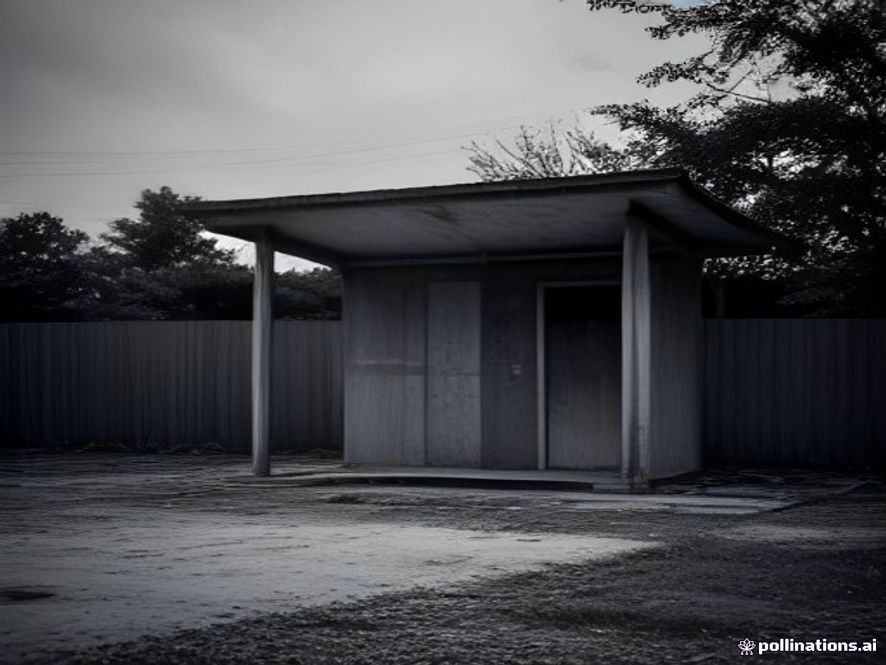
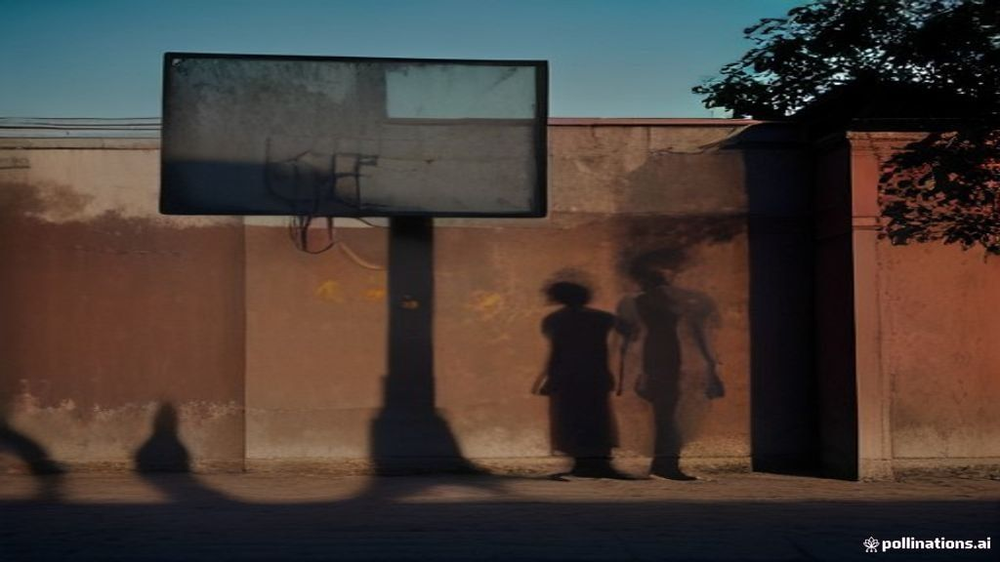

今日上午，有村民在云岭村废弃中学发现异常痕迹。该校已关闭多年，但近期频频有村民反映夜间听到校内传出异响。
记者赶到现场时，看到校舍围墙斑驳，篮球架锈迹斑斑。在教学楼角落处，发现了一些可疑的痕迹……

废弃的云岭学校操场（记者 摄）· 点击查看大图
警方已封锁现场，案件正在进一步调查中。有知情人士透露，近日曾有一名年轻男子独自进入该村，至今下落不明。
「那地方邪门得很，」一位不愿透露姓名的村民说，「晚上千万别靠近。」

阿杰最后的信息，始终萦绕在你心头。
「云岭村……别来。但如果三天后我没消息，去老教学楼三楼，窗户上有答案。」